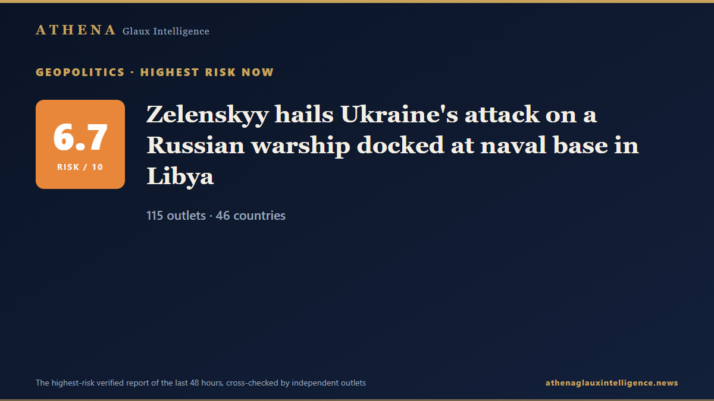
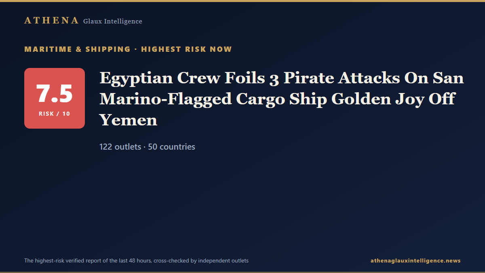
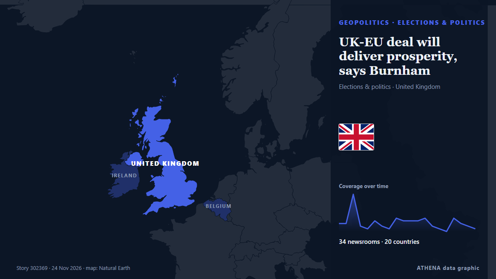

Κίνδυνος 6.7Αυξημένος
ATHENA Glaux Intelligence — Παγκόσμια ειδησεογραφική ανάλυση — κάθε αριθμός εξηγημένος
Γεωπολιτική
Όλη η Γεωπολιτική >Υψηλότερος κίνδυνος τώρα

Αυξανόμενος κίνδυνοςΑύξηση τις τελευταίες 24 ώρες
Ναυτιλία & ναυσιπλοϊα
Γραφείο Ναυτιλίας >Υψηλότερος κίνδυνος τώρα
Κίνδυνος 7.5Αυξημένος
Egyptian Crew Foils 3 Pirate Attacks On San Marino-Flagged Cargo Ship Golden Joy Off Yemen
Δείτε τα στοιχεία ›
Πίνακας παρακολούθησηςΠεράσματα, λιμάνια και άλλες ναυτιλιακές αναφορές
- Strait of HormuzΔιαταραχήattack / strike · risk 6.7 · 115 newsrooms (72 h)
- Kerch Strait / Black SeaΔιαταραχήattack / strike · risk 7.5 · 123 newsrooms (72 h)
- Danish Straits / BalticΔιαταραχήattack / strike · risk 7.5 · 123 newsrooms (72 h)
Κάθε είδηση, ελεγμένη σε πολλές χώρες.
Το ATHENA Glaux παρακολουθεί 632 ειδησεογραφικά μέσα σε όλο τον κόσμο. Μια είδηση γίνεται επαληθευμένο γεγονός μόνο όταν την αναφέρουν ανεξάρτητα μέσα. Κάθε γεγονός δείχνει ποιος το ανέφερε πρώτος και έναν βαθμό κινδύνου με τους λόγους του.
1.235γεγονότα σε 24 ώρες
632μέσα που παρακολουθούμε
42λεπτά ανάμεσα στις ενημερώσεις
Σεισμός ή πλημμύρα κοντά σας αυτή την εβδομάδα;
Γράψτε την πόλη σας και δείτε σεισμούς, πλημμύρες, καταιγίδες και επίσημες προειδοποιήσεις κοντά της, με λίστα κιτ έκτακτης ανάγκης 72 ωρών. Δωρεάν, χωρίς εγγραφή, και η περιοχή σας μένει στη συσκευή σας.
Αναφορές έρχονται από ανεξάρτητα μέσα — όταν δύο συναντηθούν στην ίδια ιστορία, γίνεται επιβεβαιωμένο γεγονός.
Πώς ελέγχει το ATHENA μια είδηση
- ΣυλλογήΟι αναφορές φτάνουν από ανεξάρτητα μέσα σε πολλές χώρες.
- ΑντιστοίχισηΌταν δύο μέσα συναντιούνται στην ίδια είδηση, γίνεται επαληθευμένο γεγονός.
- ΕξήγησηΚάθε γεγονός δείχνει ποιος ήταν πρώτος, πόσο εξαπλώθηκε και γιατί ο κίνδυνος είναι αυτός.
Παγκόσμια προοπτική κινδύνου
Εβδομαδιαίες και μηνιαίες επισκοπήσεις: τα γεγονότα υψηλότερου κινδύνου, οι τάσεις ανά τομέα και περιοχή και τι να παρακολουθήσετε.
Διαβάστε την προοπτική ›Ημερήσια ενημέρωση
Τα δέκα σημαντικότερα γεγονότα της ημέρας στον κόσμο, οι αυξανόμενοι κίνδυνοι και τα νέα γεγονότα, με κάθε αριθμό εξηγημένο.
Ανοίξτε τη σημερινή ενημέρωση ›
ΓεωπολιτικήUK-EU deal will deliver prosperity, says Burnham
Αναφέρθηκε από 34 μέσα σε 20 χώρες από τις 22 Νοε. Πρώτη αναφορά από Jamaica Observer. Το ATHENA εκτιμά τον κίνδυνο σε 3.2/10 (μέτριος), με βεβαιότητα 86%.
6.4Σημασία
3.2Κίνδυνος · μέτριος
86%Βεβαιότητα
Οι τίτλοι των ειδήσεων παρουσιάζονται στα αγγλικά, όπως δημοσιεύτηκαν.
Ενέργεια & Περιβάλλον
Burnham calls for ambition after ‘deeply disappointing’ Cop31 disagreements
The Prime Minister warned the deal on the table risked ‘taking backwards steps on climate’, which was why the UK could not support it. από Evening Standard (London)
Τεχνολογία & Κυβερνοασφάλεια
NATO believes Russia is preparing to launch a satellite equipped with nuclear weapons
Several German media outlets have reported on information held by NATO indicating that the Russians have developed a satellite that can be equipped with nuclear weapons. από Baltic News Network
Χορηγούμενο
Cybernetics and Artificial Intelligence Lab Welcome to the Cybernetics and Artificial Intelligence Laboratory, established at the Department of Business Administration of the National and Kapodistrian University of Athens. The lab is headed by Professor Dimitrios Thomakos. The lab aims to do research that can be published in top venues. Our research uses tools and methods of Artificial Intelligence, and lies in the following areas: - Forecasting - Decision making - Cyber security - Finance We are always looking forward to collaborating with exceptional students!
Μάθετε περισσότερα – Cybernetics and Artificial Intelligence LabΠλοία στα θαλάσσια περάσματα τώρα
Ζωντανές μετρήσεις AIS. Πατήστε ή περάστε πάνω από μια μπάρα για λεπτομέρειες.
Τελευταίες αναφορές
Spotify back online after brief outage, Downdetector shows
2 arrested on suspicion of burglary, trespass at Prince William’s country home
England logged record 5,258 heat-linked deaths this summer: health agency
Port of Gothenburg Invests in Electrification Infrastructure for Container Terminal
Kyiv Defends Strike on Russian Corvette in Libya as Act of Self-Defense
Japan accelerates ICC funding as US sanctions threaten court
‘Alliance is necessity, not choice’: Congress' Raj Kumar Verka targets BJP-SAD tie-up in Punjab
Lithuanian prepaid SIM cards found in Russian drones used against Ukraine – media
Γεωπολιτική
Pentagon Delays Transfer of 60 Patriot Missiles to Ukraine – FT
US Defense Secretary Pete Hegseth is reportedly delaying the transfer of around 60 Patriot interceptor missiles already purchased by Ukraine’s Western allies. από Kyiv Post
Τεχνολογία & Κυβερνοασφάλεια
Shenzhou-24 astronauts share preparation for spaceflight mission
Says he carries the 'hope of 250 million', mission is not a finish line but 'launchpad' for future endeavours. από Express Tribune
Γεωπολιτική
NATO to send early-warning system aircraft to Poland after missiles incident
Three Russian Kh-101 missiles landed in Poland last week, prosecutors said, adding to fears that Russia's war in Ukraine could spill into NATO territory. από The Straits Times
Γεωπολιτική, Πολιτική & Ασφάλεια
Περισσότερα ›Διπλωματία & σύνοδοι
Trump wants 100% of Philippine farm trade; DA says price rules
The Philippines is not ready to put all its agricultural imports in America’s basket despite United States President Donald Trump’s claim that Manila had… από Daily Tribune
- Εκλογές & πολιτική
Magyar heads to Ukraine’s Transcarpathia
- Πόλεμοι & συγκρούσεις
Israeli strikes in Gaza kill 7 including senior Hamas security official
- Διπλωματία & σύνοδοι
US army says detonation of lead explosives in Iowa will proceed
- Πόλεμοι & συγκρούσεις
Russian Strike Kills Two, Injures 40 in Ukraine’s Zaporizhzhia
Οικονομία, Χρηματοοικονομικά & Αγορές
Περισσότερα ›Μετοχές, ομόλογα & αγορές
Shares of US tech giants climb in Nasdaq trading
As of 6:15 p.m. Moscow time, Nvidia stock was up 32.58% at $166.43 per share. από TASS (English)
- Πληθωρισμός & επιτόκια
Final mile delivery prices climb 10.5% in Q3, GEODIS says
- Πληθωρισμός & επιτόκια
Mexican Peso: Gains against US Dollar expected as Fed hike bets fade – Rabobank
- Τράπεζες & πίστη
Singapore and China to expand renminbi financing, explore cross-border payment link
- Νομίσματα (FX)
Ukraine aid expected to cost next EU budget 55 billion euros in interest payments alone
Εμπόριο, Βιομηχανία & Υποδομές
Περισσότερα ›Εφοδιαστικές αλυσίδες
At least 36 trains robbed; 14 accused in $22.5 million Nike cargo theft racket in US
Fourteen people have been indicted in the US for allegedly stealing over $22.5 million worth of cargo from at least 36 freight trains in Southern California. από Times of India (World)
- Αερομεταφορές, σιδηρόδρομος & οδικές
Israeli Ministry Approves Resumption Of Flydubai Flights After Attack
- Εμπόριο & εμπορικές συμφωνίες
EU officially limits imports of Chinese hybrid vehicles
- Ναυτιλία & λιμάνια
Fake Iran Tanker Highlights Uncertainty Around Hormuz Traffic
- Μεταποίηση
Indonesia Factory Fire Kills 26 as Rescuers Search for Missing Workers
Ενέργεια, Πόροι & Περιβάλλον
Περισσότερα ›Κλίμα & κλιματική πολιτική
COP31 Failed Climate-Displaced Communities
As COP31 warns that breaching the 1.5°C threshold is nearly unavoidable, melting ice sheets and rising seas are already reshaping life on South Africa’s coast. από Daily Maverick
- Κλίμα & κλιματική πολιτική
The climate card China has yet to play
- Ενεργειακή ασφάλεια
“K” Line orders LPG dual-fuel VLGC pair from South Korea
- Πυρηνική ενέργεια
Ukraine to issue formal protest to IAEA over appointment of sanctioned Russian official as Grossi's deputy
- Πετρέλαιο & φυσικό αέριο
Kurdistan rejects Baghdad takeover of border crossings, oil fields
Τεχνολογία, ΤΝ & Κυβερνοασφάλεια
Περισσότερα ›Διάστημα & δορυφόροι
Pakistani astronaut set to make history as first foreigner aboard China's space station
Muhammad Zeeshan Ali will join China's Shenzhou-24 mission as a payload specialist, becoming the first Pakistani and foreign astronaut to enter the Tiangong space station, where he'll conduct… από TRT World
- Λογισμικό & cloud
Greece’s data centre boom angers locals near Athens
- Επεξεργαστές & υπολογιστική
U.S. adds Megaspeed to trade blacklist over export control concerns amid Nvidia controversy
- Κυβερνοασφάλεια
GTA VI hacker released despite being sentenced to 7 years in UK prison
- Ιδιωτικότητα & δεδομένα
Okta Links ShinyHunters-Associated Vishing Group to New INCEPTION Data Leak Site
Επιχειρήσεις, Εταιρείες & Επενδύσεις
Περισσότερα ›Νεοφυείς & καινοτομία
Start-up milestones for Indian plants
As Kaiga unit 1 restarts after a record-breaking refurbishment outage, India's nuclear regulator has given Nuclear Power Corporation of India permission for the First Approach to Criticality for unit… από World Nuclear News
- Επενδύσεις
ExxonMobil and partners approve $4bn investment in Angola’s Block 15
- Εταιρική στρατηγική
UK intelligence alert warns companies supporting Ukraine of Russian sabotage threat
- Διοικήσεις & στελέχη
Tony Pua may be summoned over leaked Pardons Board meeting minutes
- Συγχωνεύσεις & εξαγορές
Axiata to sell 15.64% Edotco stake to Khazanah for RM659.4mil
Δυστυχήματα & έκτακτες ανάγκες
Περισσότερα ›Δυστυχήματα & έκτακτες ανάγκες
Bus and truck collision kills 11 in UAE’s Ras Al Khaimah
Emergency crews launch rescue operations on Al Watan Road as authorities investigate cause of collision. από Express Tribune
- Δυστυχήματα & έκτακτες ανάγκες
Six killed, 10 injured in Hanoi eatery blast
- Δυστυχήματα & έκτακτες ανάγκες
Mudenda calls for year-round fight against gender-based violence beyond 16 Days of Activism
- Δυστυχήματα & έκτακτες ανάγκες
Zanzibar Fire Damages Hotels and Shops
- Δυστυχήματα & έκτακτες ανάγκες
Local people say they warned about illegal scramblers before hit-and-run death of John Queenan (62) in Ballina
Τρεις τρόποι να διαβάσετε σήμερα
Ξεκινήστε από αυτόν που ταιριάζει στον χρόνο σαςΕπαληθευμένα γεγονότα
Κατά σειρά έκτασης της κάλυψης
- Questions Linger After Jensen Huang’s Return To Nvidia168 μέσα · 55 χώρεςΚίνδυνος 4.5
- Iran says 4th oil tanker hits naval mine, catches fire in Strait of Hormuz128 μέσα · 43 χώρεςΚίνδυνος 6.7
- AI stocks rebound: How Nvidia’s comeback lifted Asian and US markets74 μέσα · 32 χώρεςΚίνδυνος 3.3
- Κίνδυνος 3.6
- Libya demands Ukraine clarify attacks on Russian vessels near Benghazi43 μέσα · 24 χώρεςΚίνδυνος 6.5
Γραφείο Αξιολόγησης
Κάντε μια ερώτηση και διαβάστε τεκμηριωμένη αξιολόγηση μιας βασικής είδησης, μαζί με το τι θα την διέψευδε.
Ανοίξτε το Γραφείο Αξιολόγησης ›Η σημερινή εικόνα
| 16:00 | 413 |
|---|---|
| 17:00 | 409 |
| 18:00 | 331 |
| 19:00 | 463 |
| 20:00 | 361 |
| 21:00 | 352 |
| 22:00 | 446 |
| 23:00 | 347 |
| 00:00 | 226 |
| 01:00 | 432 |
| 02:00 | 311 |
| 03:00 | 299 |
| 04:00 | 204 |
| 05:00 | 445 |
| 06:00 | 316 |
| 07:00 | 475 |
| 08:00 | 310 |
| 09:00 | 667 |
| 10:00 | 555 |
| 11:00 | 392 |
| 12:00 | 734 |
| 13:00 | 680 |
| 14:00 | 652 |
| 15:00 | 489 |
Κίνδυνος των σημερινών γεγονότων
Γεωπολιτική86Οικονομία & Αγορές37Τεχνολογία & Κυβερνοασφάλεια30Επιχειρήσεις30Ενέργεια & Περιβάλλον22Εμπόριο & Βιομηχανία22Ναυτιλία6
Αναδυόμενα σήματα
- Απότομη αύξηση · Ενεργό τώραPyongyang
- Κίνδυνος σε άνοδο · Ενεργό τώρα2 arrested on suspicion of burglary, trespass at Prince William’s country home
- Απότομη αύξηση · Ενεργό τώραUlleung Island
- Απότομη αύξηση · Ενεργό τώραUNRWA
- Απότομη αύξηση · Ενεργό τώραMr. Huang
Επίσημες προειδοποιήσεις
- M 6.5 - Vanuatu regionM6.5 · USGS ·
- M 5.9 - 238 km SW of Yanglong, ChinaM5.9 · PAGER yellow · USGS ·
Μείνετε ενημερωμένοι
ATHENA Weekly Risk Picture
Οι μεγαλύτεροι γεωπολιτικοί, οικονομικοί και ναυτιλιακοί κίνδυνοι της εβδομάδας, διασταυρωμένοι και βαθμολογημένοι.
Κάθε Παρασκευή στις 08:00 ώρα Ελλάδας · δωρεάν · στα αγγλικά
Δωρεάν εγγραφήΤο ATHENA στο Telegram
Οι ειδήσεις τη στιγμή που δημοσιεύονται: έκτακτα γεγονότα με κίνδυνο 6 ή περισσότερο, ωριαία σύνοψη, ενημερώσεις κινδύνου και η ημερήσια ενημέρωση στις 10:00.
Δωρεάν · αναρτήσεις στα αγγλικά · αποχωρείτε όποτε θέλετε
Είσοδος στο κανάλιΤην εγγραφή τη διαχειρίζεται η beehiiv με διπλή επιβεβαίωση: τίποτα από όσα πληκτρολογείτε δεν αποστέλλεται στο ATHENA, και κάθε τεύχος έχει σύνδεσμο διαγραφής.
Παρακολούθηση κινδύνων
Περισσότερα ›Στενά του ΟρμούζΚίνδυνος 7.612 νέα αυτή την εβδομάδα · μείωση από 33 την προηγούμενη εβδομάδαΕρυθρά ΘάλασσαΚίνδυνος 6.027 νέα αυτή την εβδομάδα · μείωση από 45 την προηγούμενη εβδομάδαΕλληνοτουρκικάΚίνδυνος 3.76 νέα αυτή την εβδομάδα · μείωση από 8 την προηγούμενη εβδομάδαΚύπροςΚίνδυνος 5.014 νέα αυτή την εβδομάδα · περίπου όσα και την προηγούμενη εβδομάδαΚυρώσεις κατά της ΡωσίαςΚίνδυνος 6.613 νέα αυτή την εβδομάδα · μείωση από 18 την προηγούμενη εβδομάδαΠόλεμος στην ΟυκρανίαΚίνδυνος 7.6233 νέα αυτή την εβδομάδα · περίπου όσα και την προηγούμενη εβδομάδαΜέση Ανατολή: Ισραήλ – ΓάζαΚίνδυνος 6.666 νέα αυτή την εβδομάδα · μείωση από 87 την προηγούμενη εβδομάδαΤαϊβάνΚίνδυνος 3.110 νέα αυτή την εβδομάδα · μείωση από 19 την προηγούμενη εβδομάδαΠετρέλαιο και φυσικό αέριοΚίνδυνος 2.929 νέα αυτή την εβδομάδα · μείωση από 43 την προηγούμενη εβδομάδαΔιώρυγα του ΣουέζΚίνδυνος 0.00 νέα αυτή την εβδομάδα · μείωση από 3 την προηγούμενη εβδομάδαΣτενά του ΒοσπόρουΚίνδυνος 0.00 νέα αυτή την εβδομάδαΔιώρυγα του ΠαναμάΚίνδυνος 0.00 νέα αυτή την εβδομάδαΣκιώδης στόλοςΚίνδυνος 0.01 νέα αυτή την εβδομάδα · μείωση από 4 την προηγούμενη εβδομάδαΝαυσιπλοΐα στη Μαύρη ΘάλασσαΚίνδυνος 7.62 νέα αυτή την εβδομάδα · μείωση από 6 την προηγούμενη εβδομάδαΚεντρικές τράπεζες και επιτόκιαΚίνδυνος 4.239 νέα αυτή την εβδομάδα · περίπου όσα και την προηγούμενη εβδομάδαΕλληνική οικονομίαΚίνδυνος 0.89 νέα αυτή την εβδομάδα · αύξηση από 7 την προηγούμενη εβδομάδαΕνέργεια στην Ανατολική ΜεσόγειοΚίνδυνος 0.00 νέα αυτή την εβδομάδα · μείωση από 4 την προηγούμενη εβδομάδαΒαλκάνιαΚίνδυνος 3.313 νέα αυτή την εβδομάδα · μείωση από 25 την προηγούμενη εβδομάδαΜεταναστευτικό στη ΜεσόγειοΚίνδυνος 0.00 νέα αυτή την εβδομάδα · μείωση από 4 την προηγούμενη εβδομάδα
Παγκόσμιοι κίνδυνοι — εβδομάδα 48, 2026 (23–29 Νοε) ›
Ανά τον κόσμο
Νότια ΑσίαSheikh Hasina seeks to return to Bangladesh on December 16 on state carrier
55 γεγονότα
Μέση Ανατολή & Βόρεια ΑφρικήSaudi Crown Prince vows to defend kingdom with 'strength and resolve' against Houthi attacks
54 γεγονότα
Νοτιοανατολική ΑσίαVietnam Embassy celebrates Vietnamese Culture Day in Phnom Penh
52 γεγονότα
Βόρεια ΑμερικήQuestions Linger After Jensen Huang’s Return To Nvidia
51 γεγονότα
Ρωσία & ΕυρασίαEstonia to close border with Russia for at least six months
42 γεγονότα
Υποσαχάρια ΑφρικήCOP31 ends in failure as countries split over fossil fuels, climate finance
41 γεγονότα
Ανατολική ΑσίαS. Korean won climbs against U.S. dollar on foreign inflows
40 γεγονότα
ΩκεανίαPM Wong to visit Australia from Nov. 23-25, meet Australian PM Albanese
34 γεγονότα
Λατινική Αμερική & ΚαραϊβικήEgyptian Crew Foils 3 Pirate Attacks On San Marino-Flagged Cargo Ship Golden Joy Off Yemen
24 γεγονότα